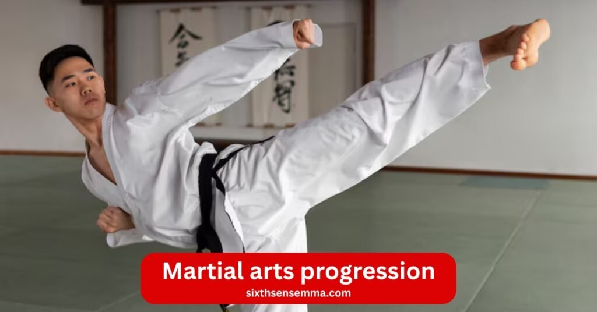
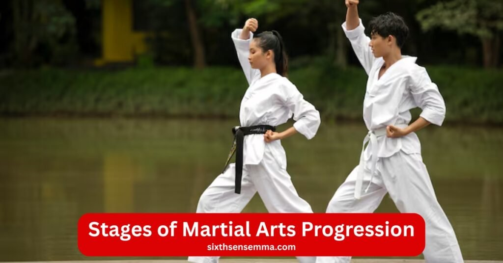
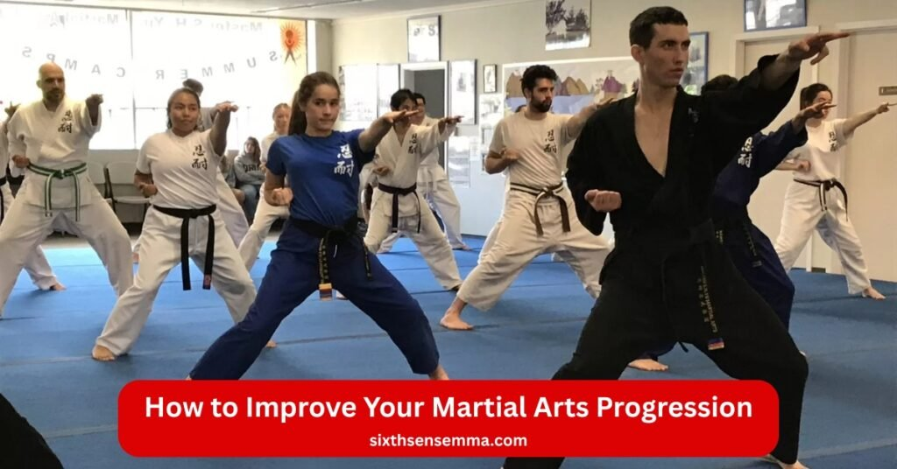

Master Martial Arts Progression The Ultimate Beginner to Expert Guide by Sixth Sense MMA

Martial arts progression is the step by step journey of growth every martial artist takes from beginner to black belt. At Sixth Sense Martial Arts, we guide students of all ages through a proven belt system in brazilian jiu jitsu. Each belt rank shows real progress in martial arts training. Build self defense, strength and flexibility and martial arts discipline. Whether you start at white belt or aim for advanced ranks, our training session and drill work fit your level of skill. Join us in Coppell and begin your martial arts journey today.
What Is Martial Arts Progression?
Martial arts progression shows the clear path every martial artist follows from white belt to black belt. This progression in martial arts uses a belt system where each belt rank marks growth in skill and knowledge. In martial arts schools, the belt progression starts at beginner level and moves step by step to advanced ranks. A belt represents hard work in martial arts training. Colors can vary across different martial arts styles, but the idea stays the same. The martial arts journey teaches self defense, builds strength and flexibility and creates martial arts discipline. From karate to taekwondo, judo to hapkido, muay thai to brazilian jiu jitsu, the progression system helps students of all ages see their level of skill.
Definition of Progression
Martial arts progression is the martial arts rank progression through a belt system. Each martial arts belt like orange belt or brown belt shows readiness for the next level. The belt level changes as a martial artist masters martial arts techniques. In many martial arts, the belt symbolizes a deeper understanding of martial arts principles. This rank systems approach gives a clearer understanding of their training goals.
Skill Development Over Time
A beginner starts with basic moves in a training session. They drill simple martial arts techniques and spar lightly. Over time, they move from white belt to beginner to intermediate stages. Learning martial arts like shaolin styles from the shaolin temple in ancient china or within samurai traditions adds history. The journey of growth includes learning a new martial art or learning more complex skills. Each belt test proves progress.
Physical, Mental & Emotional Growth
Martial arts training builds the body and mind. Students gain strength and flexibility while they stay motivated. The benefits of martial arts include self defense and confidence. An academic approach to martial arts or approach to martial arts education treats it like school. Students at this level work on refinement of moves. Advanced techniques come after mastery of advanced techniques. The black belt rank or dan ranks show achieving a black belt. It is the beginning of a new phase in one martial art or different belt paths. The belt marks understanding of the martial martial arts systems. People of all ages find martial arts discipline helps in daily life. The best martial path fits the person. Important for martial growth is regular practice and a deep understanding of martial arts styles.

Stages of Martial Arts Progression
Martial arts progression guides every martial artist through set stages in the martial arts journey. The progression in martial arts starts at white belt and climbs the belt system to black belt. In martial arts schools, students of all ages follow this belt progression. Each belt rank shows progress in martial arts training. From karate to brazilian jiu jitsu, judo to taekwondo, hapkido to muay thai, the martial arts rank progression builds self defense skills and martial arts discipline. The belt level changes with each belt test. Many martial arts use colors to mark growth. This progression system fits different martial arts styles. The martial arts belt helps track the level of skill.
- Beginner Level Foundation Building
- Intermediate Level Skill Enhancement
- Advanced Level Mastery & Precision
- Expert Level Teaching, Strategy & Leadership
Beginner Level Foundation Building
A beginner enters martial arts training at white belt. They learn basic martial arts techniques in each training session. Simple drill work builds strength and flexibility. The focus stays on martial arts principles. Students at this level gain a clearer understanding of their training. This beginning of a new path sets the base for progression in martial arts.
Intermediate Level Skill Enhancement
At orange belt or brown belt, the martial artist moves to beginner to intermediate work. They spar more and drill advanced techniques. The belt represents readiness for the next level. Learning martial arts like shaolin from the shaolin temple in ancient china adds depth. Journey of growth speeds up with belt progression.
Advanced Level Mastery & Precision
Advanced ranks bring mastery of advanced techniques. The martial arts rank nears black belt rank. Refinement of moves happens daily. Deeper understanding of martial arts systems grows. Students of all ages stay motivated through hard self defense practice. The belt symbolizes high level of skill.
Expert Level Teaching, Strategy & Leadership
Achieving a black belt opens dan ranks. This black belt is not the end of the journey. Experts teach in martial arts schools. They plan strategy and lead. One martial art or different belt paths show deep understanding. Best martial leaders come from martial arts education. Important for martial growth is sharing knowledge. Within samurai traditions, leadership matters. People of all ages learn from experts.
Key Elements of Martial Arts Progression
Martial arts progression builds on core parts that shape every martial artist. The progression in martial arts mixes martial arts techniques with body and mind growth in the belt system. Martial arts schools teach students of all ages through martial arts training. From white belt to black belt, the belt progression covers self defense and fitness. In karate, taekwondo, judo, hapkido, muay thai and brazilian jiu jitsu, each belt rank shows progress. The martial arts journey uses drill and spar to raise level of skill. Many martial arts follow this progression system. Different martial arts styles add their own martial arts rank progression. The belt level marks real change.
- Technical Skills (Kicks, Punches, Grappling)
- Physical Conditioning (Strength, Speed, Flexibility)
- Mental Discipline (Focus, Confidence, Patience)
- Self Defense Skill Development
- Sparring & Real World Application
Technical Skills (Kicks, Punches, Grappling)
Martial arts techniques start simple at beginner stage. Kicks and punches come first in training session. Grappling grows in brazilian jiu jitsu or judo. Students at this level drill daily. Each belt test checks form. Learning a new move fits the martial arts belt.
Physical Conditioning (Strength, Speed, Flexibility)
Strength and flexibility rise with hard work. Martial arts training pushes the body. Speed comes from fast drill. Beginner to intermediate students build power. Advanced ranks need peak fitness. The belt represents this growth. People of all ages gain health.
Mental Discipline (Focus, Confidence, Patience)
Focus sharpens in every class. Confidence grows with each belt rank. Patience helps during tough spar. Martial arts discipline shapes the mind. Journey of growth teaches calm. Stay motivated through setbacks. Deeper understanding comes over time.
Self Defense Skill Development
Self defense is the heart of martial arts systems. Real moves protect in danger. Martial arts like hapkido focus on control. Refinement makes skills sharp. Belt progression proves readiness for the next level. Clearer understanding of their training keeps students safe.
Sparring & Real World Application
Spar tests all skills in action. Light rolls at orange belt turn heavy at brown belt. Real fights show martial arts principles. Achieving a black belt means full use. One martial art or different belt paths apply outside the gym. Best martial practice fits life.
Benefits of a Structured Martial Arts Progression
A clear martial arts progression helps every martial artist grow step by step. The progression in martial arts uses the belt system to track progress in martial arts training. Martial arts schools give students of all ages set goals from white belt to black belt. In karate, taekwondo, judo, hapkido, muay thai and brazilian jiu jitsu, the belt progression builds self defense and life skills. Each belt rank shows real change. The martial arts journey keeps people fit and strong. Many martial arts follow this progression system. Different martial arts styles make the martial arts rank progression fun and useful. The belt level guides the level of skill.
- Better Skill Growth
- Boosted Confidence & Discipline
- Enhanced Physical Fitness
- Clear Goals & Motivation
- Lifelong Personal Development
Better Skill Growth
Structured steps speed up learning. A beginner masters basic martial arts techniques fast. Drill and spar fit each belt test. Students at this level see quick progress. The belt represents true martial arts discipline. Learning a new skill feels easy.
Boosted Confidence & Discipline
Each belt rank builds pride. Martial arts training teaches control. Journey of growth turns doubt into strength. Stay motivated with small wins. Deeper understanding of rules helps daily life. People of all ages stand taller.
Enhanced Physical Fitness
Strength and flexibility grow with every class. Training session pushes limits. Beginner to intermediate work adds power. Advanced ranks demand peak shape. Martial arts like shaolin from the shaolin temple in ancient china keep the body sharp. Belt progression tracks health gains.
Clear Goals & Motivation
Set belt level gives direction. Clearer understanding of their training keeps focus. Belt marks the next step. Readiness for the next level drives practice. One martial art or different belt paths stay exciting. Best martial goals feel close.
Lifelong Personal Development
Achieving a black belt starts new growth. Black belt rank or dan ranks teach leadership. Within samurai traditions, wisdom matters. Refinement never stops. Martial arts education shapes character forever. Important for martial life is this deep understanding.

How to Improve Your Martial Arts Progression
Speed up martial arts progression with smart daily habits. The progression in martial arts needs steady work in the belt system. Martial arts schools help students of all ages climb from white belt to black belt. In karate, taekwondo, judo, hapkido, muay thai and brazilian jiu jitsu, regular martial arts training raises level of skill. Self defense gets sharp with each belt rank. The martial arts journey rewards effort. Many martial arts use the same progression system. Different martial arts styles fit personal goals. Keep the belt progression moving. Martial arts discipline turns practice into progress.
Train with Consistency
Show up for every training session. A beginner builds base fast with daily drill. Spar often to test moves. Students at this level see belt test success. Stay motivated by never skipping. Belt represents real work.
Strength & Conditioning Workouts
Add lifts and runs outside class. Strength and flexibility grow quick. Martial arts like muay thai need power. Beginner to intermediate gains come from extra sets. Advanced ranks stay fit this way. People of all ages benefit.
Practice Forms & Techniques Regularly
Repeat martial arts techniques at home. Learning a new move sticks with shadow work. Refinement sharpens form. Journey of growth speeds up. Deeper understanding comes from solo time. Belt marks clean moves.
Learn Under Experienced Instructors
Train with pros in martial arts schools. They fix errors fast. Within samurai traditions, guidance matters. Clearer understanding of their training saves time. One martial art deepens under good eyes. Best martial tips come free.
Track Your Progress
Note each belt level change. Watch readiness for the next level. Belt progression stays clear in a journal. Achieving a black belt feels close. Important for martial growth is seeing wins. Deep understanding keeps fire lit.
Martial Arts Progression in Different Styles
Martial arts progression changes across different martial arts styles. Each one martial art uses its own belt system or progression system to show martial arts rank progression. Students of all ages follow martial arts training from beginner to expert. In taekwondo, brazilian jiu jitsu, muay thai and kung fu, the belt rank or level of skill marks progress. The martial arts journey fits the style. Many martial arts skip belts but still track growth. Martial arts schools teach self defense and martial arts discipline step by step. The belt progression or other signs guide the martial artist.
Taekwondo Belt Levels
Taekwondo uses a clear belt system. Start at white belt and move to orange belt, brown belt, then black belt. Each belt level needs a belt test with kicks and forms. Students at this level drill high spins. Belt represents strength and flexibility. Progression in martial arts ends at dan ranks for masters.
Brazilian Jiu Jitsu (BJJ) Rank System
Brazilian jiu jitsu gives stripes on white belt first. Then belt progression to blue, purple, brown belt and black belt. Spar and drill prove readiness for the next level. Martial arts techniques focus on ground work. Achieving a black belt takes years of rolls. Deeper understanding grows with live self defense.
Muay Thai Traditional Progression
Muay Thai skips martial arts belt. Gyms use armbands or shorts to show martial arts rank. Training session builds power in kicks and knees. Beginner to intermediate fighters spar light. Advanced ranks fight real bouts. Journey of growth comes from pad work and clinch. Stay motivated in hard camps.
Kung Fu System Structure
Kung fu styles like shaolin from shaolin temple in ancient china use sashes or different belt. Martial arts like wing chun track forms. Learning a new animal style marks belt marks. Refinement of stances takes time. People of all ages gain deep understanding of flow. Best martial path fits the school.
Why Choose Sixth Sense For Martial Arts Progression
Choose Sixth Sense Martial Arts for true martial arts progression in brazilian jiu-jitsu. Our martial arts schools in Coppell guide students of all ages through every step of martial arts progression. Start at white belt and follow the belt system to black belt. Each training session speeds your martial arts progression. Build self-defense, strength and flexibility, and martial arts discipline. Drill daily. Spar smart. Pass belt test smooth. Many martial arts skip depth. We make martial arts progression real. Different martial arts styles meet here. People of all ages see fast progress. Begin your martial arts journey now. Free trial ready.
Contact Us
Ready to start your martial arts progression? Join students of all ages at Sixth Sense Martial Arts. Train in brazilian jiu jitsu with expert guidance. Build self defense skills from white belt to black belt. Each training session moves you up the belt system. Martial arts schools like ours focus on martial arts discipline and progress. Call or email today. Take the belt test toward achieving a black belt.
Location: 817 S MacArthur Blvd #100, Coppell, TX 75019, United States
Phone: 469 972 7800
Email: info@sixthsensemma.com
Conclusion
Martial arts progression offers a clear path for every martial artist. The progression in martial arts uses belt rank and martial arts training to grow level of skill. From karate to taekwondo, judo to hapkido, muay thai to brazilian jiu jitsu, the belt progression builds strength and flexibility. Many martial arts share this progression system. Different martial arts styles fit people of all ages. Start your martial arts journey now. Stay consistent. Stay motivated. Reach advanced ranks. The black belt rank waits.
Follow Us on Social Media
Stay connected with Sixth Sense MMA through our social media channels. Follow us for class updates, training tips, and a closer look at our self defense community.
FAQ’s
Martial arts progression varies by style, but many use a belt system with 8-10 kyu (beginner to intermediate) ranks before black belt, followed by 10 dan ranks. In judo and karate, this totals around 20 levels from white belt to 10th dan black belt rank. Brazilian jiu-jitsu has 5 main belts plus stripes, extending to 9th dan. At Sixth Sense Martial Arts in Coppell, our brazilian jiu-jitsu program follows a structured belt progression tailored for students of all ages, emphasizing self-defense and martial arts discipline.
Train consistently 2-3 times weekly, focusing on drill basics, spar regularly, and seek instructor feedback. Build strength and flexibility with conditioning, track belt test goals, and stay motivated through small wins. In martial arts training, repetition and patience drive progress. Sixth Sense Martial Arts offers personalized guidance in brazilian jiu-jitsu to accelerate your martial arts journey in Coppell.
Stages include beginner (foundation building), intermediate (skill enhancement), advanced (mastery and precision), and expert (teaching and leadership). This mirrors martial arts progression from white belt basics to dan ranks refinement. Journey of growth involves drill, spar, and self-defense application. Join Sixth Sense Martial Arts for structured stages in brazilian jiu-jitsu suitable for people of all ages.
The big 4 are boxing, muay thai, brazilian jiu-jitsu, and wrestling, foundational for MMA due to striking, kicking, grappling, and takedowns. They cover self-defense and fitness comprehensively. Sixth Sense Martial Arts specializes in brazilian jiu-jitsu, a key pillar for ground control and martial arts discipline.
Karate tops popularity lists for global practitioners and cultural impact, followed by taekwondo and kung fu. Its emphasis on strikes, forms, and philosophy makes it accessible. For effective self-defense, brazilian jiu-jitsu excels in real scenarios. At Sixth Sense Martial Arts, explore brazilian jiu-jitsu as a top choice for progression in martial arts.
Jackie Chan holds a black belt in hapkido, earned through dedicated training, plus honorary ranks like World Karate Federation black belt. His Peking Opera background honed kung fu acrobatics. Train similar skills at Sixth Sense Martial Arts in brazilian jiu-jitsu for versatile martial arts techniques.
The four main karate styles, in historical development order: Shito-ryu (blends Shuri and Naha-te), Goju-ryu (hard-soft balance), Shotokan (linear power), Wado-ryu (evasion focus). Each builds martial arts discipline uniquely. Complement with brazilian jiu-jitsu at Sixth Sense Martial Arts for hybrid growth.
Jiu-jitsu edges out in ground control and submissions, proven in MMA where fights often go down. Karate excels in striking distance. Strength depends on context; combine for best results. Sixth Sense Martial Arts teaches brazilian jiu-jitsu to master grappling dominance.
Brazilian jiu-jitsu tops for technical complexity, live rolling, and mental chess-like strategy. Others like muay thai challenge physically. Dedication yields progress. Start your tough journey at Sixth Sense Martial Arts in Coppell.
Levels are kyu (beginner-intermediate) and dan (advanced black belt) in Japanese styles like karate. Kyu counts down (10th to 1st); dan counts up (1st to 10th). Belt ranks visualize progress. Sixth Sense Martial Arts uses clear belt progression in brazilian jiu-jitsu.
Train with us in Coppell
The first class is free. Shorts, a t-shirt and a water bottle. We lend the rest.
Book a free class